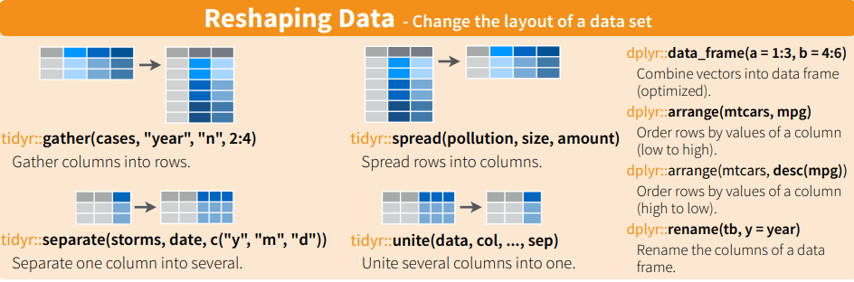
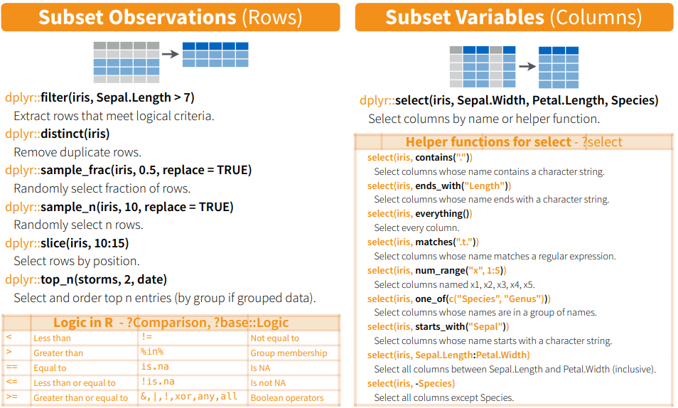
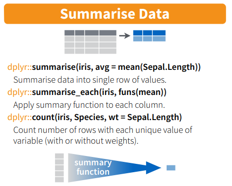
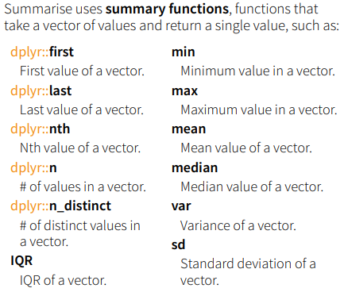

需要安裝babynames,ggplot2

long and wide data
寬變長
函數gather(): 寬變長
From http://stackoverflow.com/questions/1181060
require(tidyr)
require(dplyr) # tibble
# 每個時間點(共10個),產生3個股票,X,Y,Z
stocks <- tibble( #🏷
time = as.Date('2009-01-01') + 0:9,
X = rnorm(10, 0, 1),
Y = rnorm(10, 0, 2),
Z = rnorm(10, 0, 4)
)
kable(head(stocks)) #
kable(gather(stocks, stock, price, -time)) #🏷
stocks %>% gather(stock, price, -time) # 🏷
🐱👤直接寫出html : 利用writeLines(),例如設定css
設定css
writeLines("td, th { padding : 6px } th { background-color : brown ; color : white; border : 1px solid white; } td { color : brown ; border : 1px solid brown }", con = "tableStyle.css")
kable(head(mtcars))
長到寬資料
利用函數spread()
long<-gather(stocks, stock, price, -time) #轉成長資料
str(long)
#> tibble [30 x 3] (S3: tbl_df/tbl/data.frame)
#> $ time : Date[1:30], format: "2009-01-01" "2009-01-02" ...
#> $ stock: chr [1:30] "X" "X" "X" "X" ...
#> $ price: num [1:30] 0.678 -0.224 -0.122 -0.355 0.312 ...
wide <-spread(long,stock,price) #轉成寬資料
str(wide)
#> tibble [10 x 4] (S3: tbl_df/tbl/data.frame)
#> $ time: Date[1:10], format: "2009-01-01" "2009-01-02" ...
#> $ X : num [1:10] 0.678 -0.224 -0.122 -0.355 0.312 ...
#> $ Y : num [1:10] 0.7513 -2.1863 -0.0861 0.244 -1.5313 ...
#> $ Z : num [1:10] -9.971 0.683 -0.166 7.489 -3.748 ...
head(wide)
#> # A tibble: 6 x 4
#> time X Y Z
#> <date> <dbl> <dbl> <dbl>
#> 1 2009-01-01 0.678 0.751 -9.97
#> 2 2009-01-02 -0.224 -2.19 0.683
#> 3 2009-01-03 -0.122 -0.0861 -0.166
#> 4 2009-01-04 -0.355 0.244 7.49
#> 5 2009-01-05 0.312 -1.53 -3.75
#> 6 2009-01-06 -0.544 -1.15 4.74
更多參考: cookbook for R
dplyr 的向量函數
函數名 功能
-
row_number()排序(😒不是紀錄號碼),如果數值一樣,則靠前出現的元素排名在前,例如(3,3) 則 1,2 -
min_rank()排序,如果數值一樣,則都是同一等級，但是，佔用下一名次。例如data<-c(3,3,4) min_rank(data) #> [1] 1 1 3 #🏷 -
dense_rank()排序,如果數值一樣,則都是同一等級，但是，不佔用下一名次data<-c(3,3,4) dense_rank(data) #> [1] 1 1 2 -
percent_rank()按百分比的排名percent_rank = (min_rank(x) - 1)/(sum(!is.na(x)) - 1) -
cume_dist()累計分佈 -
ntile():floor(n * (row_number(x) - 1)/len + 1)data<-round(runif(10)*10) pr<-percent_rank(data) cd<-cume_dist(data) mr<-min_rank(data) df<-data.frame(data,pr,mr,cd) arrange(df,data)data pr mr cd 0 0.0000000 1 0.1 1 0.1111111 2 0.2 3 0.2222222 3 0.4 3 0.2222222 3 0.4 4 0.4444444 5 0.5 6 0.5555556 6 0.6 7 0.6666667 7 0.8 7 0.6666667 7 0.8 8 0.8888889 9 0.9 10 1.0000000 10 1.0
其他範例
x <- c(5, 1, 3, 2, 2, NA)
row_number(x)
#> [1] 5 1 4 2 3 NA
min_rank(x)
#> [1] 5 1 4 2 2 NA
dense_rank(x)
#> [1] 4 1 3 2 2 NA
percent_rank(x)
#> [1] 1.00 0.00 0.75 0.25 0.25 NA
cume_dist(x)
#> [1] 1.0 0.2 0.8 0.6 0.6 NA
ntile(x, 2)
#> [1] 2 1 2 1 1 NA
ntile(1:8, 3)
#> [1] 1 1 1 2 2 2 3 3
note:
(2,3,3,3,3,4,5,6,6,9)
| 1 | 2 | 3 | 4 | 5 | 6 | 7 | 8 | 9 |
|---|---|---|---|---|---|---|---|---|
| 0 | 1 | 4 | 1 | 1 | 2 | 0 | 0 | 1 |
arrange(dataframe, col1, col2, col3)
vs.
dataframe[order(dataframe$col1, dataframe$col2, dataframe$col3), ]
vs.
with(dataframe, dataframe[order(col1, col2, col3), ])
rank等級想要由大到小可以像下面這樣
data
#> [1] 1 8 10 0 7 6 3 3 4 7
row_number(desc(data))
#> [1] 9 2 1 10 3 5 7 8 6 4
❓探討為甚麼?
desc(data)
#> [1] -7 -4 -1 -6 -4 -8 -9 -3 -1 -2 #<!--html_preserve--><span data-bs-toggle="tooltip" data-bs-html="true"
title="👏原來的資料變成負數">🏷</span><!--/html_preserve-->
row_number(data)
#> [1] 8 5 1 7 6 9 10 4 2 3
複習一下Percentile
❓Find the 32nd, 57th and 98th percentiles of runiform(200).
data<-runif(200)
quantile(data, c(.32, .57, .98))
#> 32% 57% 98%
#> 0.2398605 0.5510189 0.9456776
subset

- select()選欄位
- filter()選紀錄
library(babynames)
babynames
#> # A tibble: 1,924,665 x 5
#> year sex name n prop
#> <dbl> <chr> <chr> <int> <dbl>
#> 1 1880 F Mary 7065 0.0724
#> 2 1880 F Anna 2604 0.0267
#> 3 1880 F Emma 2003 0.0205
#> 4 1880 F Elizabeth 1939 0.0199
#> 5 1880 F Minnie 1746 0.0179
#> 6 1880 F Margaret 1578 0.0162
#> 7 1880 F Ida 1472 0.0151
#> 8 1880 F Alice 1414 0.0145
#> 9 1880 F Bertha 1320 0.0135
#> 10 1880 F Sarah 1288 0.0132
#> # ... with 1,924,655 more rows
babynames %>% select(-prop) #🏷
#> # A tibble: 1,924,665 x 4
#> year sex name n
#> <dbl> <chr> <chr> <int>
#> 1 1880 F Mary 7065
#> 2 1880 F Anna 2604
#> 3 1880 F Emma 2003
#> 4 1880 F Elizabeth 1939
#> 5 1880 F Minnie 1746
#> 6 1880 F Margaret 1578
#> 7 1880 F Ida 1472
#> 8 1880 F Alice 1414
#> 9 1880 F Bertha 1320
#> 10 1880 F Sarah 1288
#> # ... with 1,924,655 more rows
babynames %>% select(year:n)
#> # A tibble: 1,924,665 x 4
#> year sex name n
#> <dbl> <chr> <chr> <int>
#> 1 1880 F Mary 7065
#> 2 1880 F Anna 2604
#> 3 1880 F Emma 2003
#> 4 1880 F Elizabeth 1939
#> 5 1880 F Minnie 1746
#> 6 1880 F Margaret 1578
#> 7 1880 F Ida 1472
#> 8 1880 F Alice 1414
#> 9 1880 F Bertha 1320
#> 10 1880 F Sarah 1288
#> # ... with 1,924,655 more rows
# starts_with(), ends_with(), contains()
babynames %>% filter(name == "Hadley")
#> # A tibble: 163 x 5
#> year sex name n prop
#> <dbl> <chr> <chr> <int> <dbl>
#> 1 1906 M Hadley 6 0.0000416
#> 2 1908 M Hadley 16 0.0000962
#> 3 1909 M Hadley 14 0.0000792
#> 4 1910 M Hadley 5 0.0000240
#> 5 1911 M Hadley 9 0.0000373
#> 6 1912 M Hadley 11 0.0000244
#> 7 1913 M Hadley 10 0.0000186
#> 8 1914 M Hadley 15 0.0000220
#> 9 1915 M Hadley 14 0.0000159
#> 10 1916 M Hadley 14 0.0000152
#> # ... with 153 more rows
babynames %>% filter(year == 1900, sex == "F")
#> # A tibble: 2,224 x 5
#> year sex name n prop
#> <dbl> <chr> <chr> <int> <dbl>
#> 1 1900 F Mary 16706 0.0526
#> 2 1900 F Helen 6343 0.0200
#> 3 1900 F Anna 6114 0.0192
#> 4 1900 F Margaret 5304 0.0167
#> 5 1900 F Ruth 4765 0.0150
#> 6 1900 F Elizabeth 4096 0.0129
#> 7 1900 F Florence 3920 0.0123
#> 8 1900 F Ethel 3896 0.0123
#> 9 1900 F Marie 3856 0.0121
#> 10 1900 F Lillian 3414 0.0107
#> # ... with 2,214 more rows
babynames %>% filter(year == 2013, sex == "F")
#> # A tibble: 19,231 x 5
#> year sex name n prop
#> <dbl> <chr> <chr> <int> <dbl>
#> 1 2013 F Sophia 21213 0.0110
#> 2 2013 F Emma 20936 0.0109
#> 3 2013 F Olivia 18414 0.00957
#> 4 2013 F Isabella 17631 0.00916
#> 5 2013 F Ava 15249 0.00793
#> 6 2013 F Mia 13147 0.00683
#> 7 2013 F Emily 13124 0.00682
#> 8 2013 F Abigail 12405 0.00645
#> 9 2013 F Madison 10591 0.00551
#> 10 2013 F Elizabeth 9448 0.00491
#> # ... with 19,221 more rows
函數mutate()
babynames %>%
mutate(
first = tolower(substr(name, 1, 1)),
last = substr(name, nchar(name), nchar(name))
)
#> # A tibble: 1,924,665 x 7
#> year sex name n prop first last
#> <dbl> <chr> <chr> <int> <dbl> <chr> <chr>
#> 1 1880 F Mary 7065 0.0724 m y
#> 2 1880 F Anna 2604 0.0267 a a
#> 3 1880 F Emma 2003 0.0205 e a
#> 4 1880 F Elizabeth 1939 0.0199 e h
#> 5 1880 F Minnie 1746 0.0179 m e
#> 6 1880 F Margaret 1578 0.0162 m t
#> 7 1880 F Ida 1472 0.0151 i a
#> 8 1880 F Alice 1414 0.0145 a e
#> 9 1880 F Bertha 1320 0.0135 b a
#> 10 1880 F Sarah 1288 0.0132 s h
#> # ... with 1,924,655 more rows
babynames %>%
arrange(desc(prop))
#> # A tibble: 1,924,665 x 5
#> year sex name n prop
#> <dbl> <chr> <chr> <int> <dbl>
#> 1 1880 M John 9655 0.0815
#> 2 1881 M John 8769 0.0810
#> 3 1880 M William 9532 0.0805
#> 4 1883 M John 8894 0.0791
#> 5 1881 M William 8524 0.0787
#> 6 1882 M John 9557 0.0783
#> 7 1884 M John 9388 0.0765
#> 8 1882 M William 9298 0.0762
#> 9 1886 M John 9026 0.0758
#> 10 1885 M John 8756 0.0755
#> # ... with 1,924,655 more rows
babynames %>%
summarise(n = sum(n)) #🏷
#> # A tibble: 1 x 1
#> n
#> <int>
#> 1 348120517
分組
- 函數
group_by()用來分組，不會影響到原來的資料,只是添加資訊 - 取消分組的函數為
ungroup()
head(mtcars)
| mpg | cyl | disp | hp | drat | wt | qsec | vs | am | gear | carb | |
|---|---|---|---|---|---|---|---|---|---|---|---|
| Mazda RX4 | 21.0 | 6 | 160 | 110 | 3.90 | 2.620 | 16.46 | 0 | 1 | 4 | 4 |
| Mazda RX4 Wag | 21.0 | 6 | 160 | 110 | 3.90 | 2.875 | 17.02 | 0 | 1 | 4 | 4 |
| Datsun 710 | 22.8 | 4 | 108 | 93 | 3.85 | 2.320 | 18.61 | 1 | 1 | 4 | 1 |
| Hornet 4 Drive | 21.4 | 6 | 258 | 110 | 3.08 | 3.215 | 19.44 | 1 | 0 | 3 | 1 |
| Hornet Sportabout | 18.7 | 8 | 360 | 175 | 3.15 | 3.440 | 17.02 | 0 | 0 | 3 | 2 |
| Valiant | 18.1 | 6 | 225 | 105 | 2.76 | 3.460 | 20.22 | 1 | 0 | 3 | 1 |
str(mtcars)
#> 'data.frame': 32 obs. of 11 variables:
#> $ mpg : num 21 21 22.8 21.4 18.7 18.1 14.3 24.4 22.8 19.2 ...
#> $ cyl : num 6 6 4 6 8 6 8 4 4 6 ...
#> $ disp: num 160 160 108 258 360 ...
#> $ hp : num 110 110 93 110 175 105 245 62 95 123 ...
#> $ drat: num 3.9 3.9 3.85 3.08 3.15 2.76 3.21 3.69 3.92 3.92 ...
#> $ wt : num 2.62 2.88 2.32 3.21 3.44 ...
#> $ qsec: num 16.5 17 18.6 19.4 17 ...
#> $ vs : num 0 0 1 1 0 1 0 1 1 1 ...
#> $ am : num 1 1 1 0 0 0 0 0 0 0 ...
#> $ gear: num 4 4 4 3 3 3 3 4 4 4 ...
#> $ carb: num 4 4 1 1 2 1 4 2 2 4 ...
by_cyl <- mtcars %>% group_by(cyl)
head(by_cyl) #🏷
#> # A tibble: 6 x 11
#> # Groups: cyl [3]
#> mpg cyl disp hp drat wt qsec vs am gear carb
#> <dbl> <dbl> <dbl> <dbl> <dbl> <dbl> <dbl> <dbl> <dbl> <dbl> <dbl>
#> 1 21 6 160 110 3.9 2.62 16.5 0 1 4 4
#> 2 21 6 160 110 3.9 2.88 17.0 0 1 4 4
#> 3 22.8 4 108 93 3.85 2.32 18.6 1 1 4 1
#> 4 21.4 6 258 110 3.08 3.22 19.4 1 0 3 1
#> 5 18.7 8 360 175 3.15 3.44 17.0 0 0 3 2
#> 6 18.1 6 225 105 2.76 3.46 20.2 1 0 3 1
str(by_cyl)
#> grouped_df [32 x 11] (S3: grouped_df/tbl_df/tbl/data.frame)
#> $ mpg : num [1:32] 21 21 22.8 21.4 18.7 18.1 14.3 24.4 22.8 19.2 ...
#> $ cyl : num [1:32] 6 6 4 6 8 6 8 4 4 6 ...
#> $ disp: num [1:32] 160 160 108 258 360 ...
#> $ hp : num [1:32] 110 110 93 110 175 105 245 62 95 123 ...
#> $ drat: num [1:32] 3.9 3.9 3.85 3.08 3.15 2.76 3.21 3.69 3.92 3.92 ...
#> $ wt : num [1:32] 2.62 2.88 2.32 3.21 3.44 ...
#> $ qsec: num [1:32] 16.5 17 18.6 19.4 17 ...
#> $ vs : num [1:32] 0 0 1 1 0 1 0 1 1 1 ...
#> $ am : num [1:32] 1 1 1 0 0 0 0 0 0 0 ...
#> $ gear: num [1:32] 4 4 4 3 3 3 3 4 4 4 ...
#> $ carb: num [1:32] 4 4 1 1 2 1 4 2 2 4 ...
#> - attr(*, "groups")= tibble [3 x 2] (S3: tbl_df/tbl/data.frame)
#> ..$ cyl : num [1:3] 4 6 8
#> ..$ .rows: list<int> [1:3]
#> .. ..$ : int [1:11] 3 8 9 18 19 20 21 26 27 28 ...
#> .. ..$ : int [1:7] 1 2 4 6 10 11 30
#> .. ..$ : int [1:14] 5 7 12 13 14 15 16 17 22 23 ...
#> .. ..@ ptype: int(0)
#> ..- attr(*, ".drop")= logi TRUE
但是分組結果會影響其他dplyr指令的計算結果:
by_cyl %>% summarise( disp = mean(disp), hp = mean(hp) )
#> # A tibble: 3 x 3
#> cyl disp hp
#> <dbl> <dbl> <dbl>
#> 1 4 105. 82.6
#> 2 6 183. 122.
#> 3 8 353. 209.
by_cyl %>% filter(disp == max(disp))
#> # A tibble: 3 x 11
#> # Groups: cyl [3]
#> mpg cyl disp hp drat wt qsec vs am gear carb
#> <dbl> <dbl> <dbl> <dbl> <dbl> <dbl> <dbl> <dbl> <dbl> <dbl> <dbl>
#> 1 21.4 6 258 110 3.08 3.22 19.4 1 0 3 1
#> 2 24.4 4 147. 62 3.69 3.19 20 1 0 4 2
#> 3 10.4 8 472 205 2.93 5.25 18.0 0 0 3 4
dplyr::group_by(iris, Species)
#> # A tibble: 150 x 5
#> # Groups: Species [3]
#> Sepal.Length Sepal.Width Petal.Length Petal.Width Species
#> <dbl> <dbl> <dbl> <dbl> <fct>
#> 1 5.1 3.5 1.4 0.2 setosa
#> 2 4.9 3 1.4 0.2 setosa
#> 3 4.7 3.2 1.3 0.2 setosa
#> 4 4.6 3.1 1.5 0.2 setosa
#> 5 5 3.6 1.4 0.2 setosa
#> 6 5.4 3.9 1.7 0.4 setosa
#> 7 4.6 3.4 1.4 0.3 setosa
#> 8 5 3.4 1.5 0.2 setosa
#> 9 4.4 2.9 1.4 0.2 setosa
#> 10 4.9 3.1 1.5 0.1 setosa
#> # ... with 140 more rows
#Group data into rows with the same value of Species.
#dplyr::ungroup(iris) #🏷
iris %>% group_by(Species) %>% summarise(mean=mean(Sepal.Length))
#> # A tibble: 3 x 2
#> Species mean
#> <fct> <dbl>
#> 1 setosa 5.01
#> 2 versicolor 5.94
#> 3 virginica 6.59
報告
函數summarise()
|  |  |
summarize() 可以用的函數型態是輸入向量,輸出一個值得函數。例如
- mean(): the mean AKA the average
- sd(): the standard deviation, which is a measure of spread
- min() and max(): the minimum and maximum values respectively
- IQR(): Interquartile range
- sum(): the sum
- n(): 每組觀察數目。可以用來配套
group_by()。
實驗 pipeline vs no pipeline
- x %>% f(y) <===> f(x, y) 🏷
- y %>% f(x, ., z) <===> f(x, y, z ) #🏷
-
產生資料
year=c(1990, 1991, 1990, 1991, 1990, 1991, 1990, 1991, 1990, 1991) sex=c("f", "f", "f", "f", "f", "m", "m", "m", "m", "m") #value=c(1, 2, 3, 4, 5, 1, 2, 3, 4, 5) value=c(1, 2, 3, 4, 5, 6, 7, 8, 9, 10) odf<-data.frame(sex,year,value) head(odf)sex year value f 1990 1 f 1991 2 f 1990 3 f 1991 4 f 1990 5 m 1991 6 -
不用 pipeline
df<-group_by(odf,sex) ndf<-mutate(df,rank=min_rank(value)) # 🏷 arrange(ndf,sex) #🏷 #> # A tibble: 10 x 4 #> # Groups: sex [2] #> sex year value rank #> <chr> <dbl> <dbl> <int> #> 1 f 1990 1 1 #> 2 f 1991 2 2 #> 3 f 1990 3 3 #> 4 f 1991 4 4 #> 5 f 1990 5 5 #> 6 m 1991 6 1 #> 7 m 1990 7 2 #> 8 m 1991 8 3 #> 9 m 1990 9 4 #> 10 m 1991 10 5 -
使用 pipeline
ndf<-odf %>% group_by(sex) %>% mutate(rank = min_rank(value)) arrange(ndf,sex) #> # A tibble: 10 x 4 #> # Groups: sex [2] #> sex year value rank #> <chr> <dbl> <dbl> <int> #> 1 f 1990 1 1 #> 2 f 1991 2 2 #> 3 f 1990 3 3 #> 4 f 1991 4 4 #> 5 f 1990 5 5 #> 6 m 1991 6 1 #> 7 m 1990 7 2 #> 8 m 1991 8 3 #> 9 m 1990 9 4 #> 10 m 1991 10 5
看看其他範例
df %>% group_by(sex) %>%str() #🏷
#> grouped_df [10 x 3] (S3: grouped_df/tbl_df/tbl/data.frame)
#> $ sex : chr [1:10] "f" "f" "f" "f" ...
#> $ year : num [1:10] 1990 1991 1990 1991 1990 ...
#> $ value: num [1:10] 1 2 3 4 5 6 7 8 9 10
#> - attr(*, "groups")= tibble [2 x 2] (S3: tbl_df/tbl/data.frame)
#> ..$ sex : chr [1:2] "f" "m"
#> ..$ .rows: list<int> [1:2]
#> .. ..$ : int [1:5] 1 2 3 4 5
#> .. ..$ : int [1:5] 6 7 8 9 10
#> .. ..@ ptype: int(0)
#> ..- attr(*, ".drop")= logi TRUE
babynames %>%
group_by(name) %>%
summarise(n = sum(n)) #🏷
#> # A tibble: 97,310 x 2
#> name n
#> <chr> <int>
#> 1 Aaban 107
#> 2 Aabha 35
#> 3 Aabid 10
#> 4 Aabir 5
#> 5 Aabriella 32
#> 6 Aada 5
#> 7 Aadam 254
#> 8 Aadan 130
#> 9 Aadarsh 199
#> 10 Aaden 4658
#> # ... with 97,300 more rows
babynames %>%
filter(name %in% c("John", "Mary", "William")) %>%
group_by(name, sex) %>%
summarise(n = sum(n))
#> # A tibble: 6 x 3
#> # Groups: name [3]
#> name sex n
#> <chr> <chr> <int>
#> 1 John F 21676
#> 2 John M 5115466
#> 3 Mary F 4123200
#> 4 Mary M 15160
#> 5 William F 15949
#> 6 William M 4102604
babynames %>%
group_by(year, sex) %>%
mutate(rank = min_rank(desc(n))) %>%
tail() #🏷
#> # A tibble: 6 x 6
#> # Groups: year, sex [1]
#> year sex name n prop rank
#> <dbl> <chr> <chr> <int> <dbl> <int>
#> 1 2017 M Zyhier 5 0.00000255 12171
#> 2 2017 M Zykai 5 0.00000255 12171
#> 3 2017 M Zykeem 5 0.00000255 12171
#> 4 2017 M Zylin 5 0.00000255 12171
#> 5 2017 M Zylis 5 0.00000255 12171
#> 6 2017 M Zyrie 5 0.00000255 12171
練習
-
名叫Hadley 的男女各多少人?
babynames %>% filter(name == "Hadley") %>% group_by(sex) %>% summarise(n = sum(n)) #> # A tibble: 2 x 2 #> sex n #> <chr> <int> #> 1 F 26708 #> 2 M 1883 -
The travesty延續上題，各年的的男女Hadley數目?
library(ggplot2) babynames %>% filter(name == "Hadley") %>% ggplot(aes(year, n)) + geom_line(aes(colour = sex)) #🏷
figure